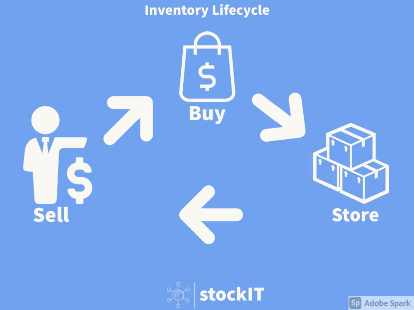

“To develop a financially viable, simple inventory management system”
Businesses are asking for an easy to use solution that will increase productivity. Our team wishes to create the solution to this problem ensuring businesses will be able to flourish in this post covid world. “71% of retailers are looking to inventory management technology to improve their supply chain efficiency.” (Square, 2021) This has made significant impact to businesses due to the expense of many solutions along with the training necessary for competence. We will make the software easier by including a modern interface with big touch enabled buttons and hiding unnecessary detail in the simple display. Our product will be financially viable by saving both the operators time and companies money. Our pricing will be subscription based for our web enabled services and licence based for software installed directly on hardware.
Create an application wireframe
Our team’s initial objective is to develop a wireframe for our project. This will ensure that we have a vision of our product that we can work towards. Our decision to make the visual design the first goal stems from our groups perceived abilities in the IT space. Much of our team have little to no programming experience and we are unable to find a suitable solution which provides application design in an easy to learn format. The other significant reason for this is our time constraints in development, if we were to create a full application in five weeks’ time, we would not provide anything of substance, or we simply would not be able to complete our initial goal to a satisfying conclusion.
Create a mock website with sample data.
Secondarily to our initial goal we wish to create a pseudo functional website. The reason we chose to this as a secondary goal as it is a significant step up from creating a wireframe. This will require the use of some more complicated programming and potentially a database backend with a webserver. Including this is a measurable jump for the skills of our team and will show progression in both the project and our team. This has been defined as one of our stretch goals and as such will most likely not be delivered to a complete standard by the end of week 12.
Create a mobile application.
Finally, we wish to embark upon development of a mobile application which can host a small business’s inventory. This has been presented to our team as an unattainable goal for the original time frame of 21st of November. This was included as an attainable goal for the 6 month project defined within our skills and jobs segment.
Preface
The highest cost for a business is staff. This is especially true in the hospitality and retail sectors, where seasonal and low-skilled employment is often used to bridge staffing gaps over high turnover periods, such as Christmas. These industries are challenged by low profit margins against comparatively high staffing costs, making it difficult for businesses to generate consistent and strong revenue to enable the growth of the business.
According to the Department of Industry’s report from 2018, “Small and medium businesses with higher levels of digital engagement are significantly more likely to be growing revenue, creating jobs, exporting and innovating new products or services.” Despite this, “many businesses are still a long way off adopting digital technology.” We attribute this to lack of intuitive, affordable, and accessible solutions for small to medium businesses; it is for these reasons the idea of stockIT was created to bridge the gap between the demands of the industry with the skills of the workforce.
stockIT
StockIT is an integrated inventory management and business platform. It aims to empower business owners to make smarter, evidence based decisions through access to real-time data on the purchasing, tracking and fulfillment of inventory. It is through this process that stockIT’s three main goals can be realised, which are to:
optimise wastage
increase purchasing power
improve supply chain efficacy.
In order to appreciate the full value add of stockIT for a business, it is important to understand the basics of and the underlying mechanics of inventory management. Purchase, store, supply, sell and analyse
Through digitalising inventory management with the use of stockIT a business can optimise their resources, increase purchasing power and improve supply chain efficacy. StockIT is a backend facing software suite that allows the user (a company or business) to track their inventory from purchase to sale and at every point in between.
(assignment 2 extract starts)
StockIT’s data driven approach allows the user to make informed decisions about inventory management, minimizing the risk of personnel failures and human error, in the tracking, purchasing and fulfilment of orders and inventory.
With a heavy focus on the Retail and Hospitality sectors, stockIT allows its users to keep track of inventory from a variety of different SILos [Standalone Inventory Locations] (stores, locations, sites), or a single location, and see at a glance the current inventory on hand. This enables users with different SILos to see the bigger picture of their organization, but allows them to identify shortfalls or issues at the micro level. Resolving issues at this level allows for business to stem issues before they grow and have impacts on a larger scale. It also allows individual SILo managers to see how small changes on their end impact business more broadly. Only have a single location for your business? No problem. The scalability of stockIT means it can be utilised by a business of any size to help them achieve a greater level of efficiency in their inventory management, the key fundamental functionalities of stockIT apply to a business of any size. This negates the need for small and medium business to seek alternative business solutions as they seek to grow, making stockIT an ideal tool for growing businesses to use.
A clean and user-friendly interface is integral to any piece of software in today’s day and age. The hospitality and retail industries can be prone to staff change, especially before and after peak service season towards the end of the calendar year. Further to this, staff will most likely possess a range of different levels of technological literacy. Ensuring that software is accessible, functional and thus fit for purpose is vitally important; stockIT uses simple drop down menus and click-through commands, allowing the user to spend less time navigating systems and more time focusing on their work, whether that be customer service or deliverables.
(assignment 2 extract ends.)
Where it all began
The first iteration of stockIT was an app idea named “Stock-Take-It”. Initially the app was designed to fill a need in a group member’s business, where productivity and efficiency were being lost during the inventory management process, The app focused on a simple easy to use interface and on increasing the user’s efficiency and accuracy when it came to counting and collating inventory data.
The stockIT we see now grew as an extension of the original seed of “Stock-Take-IT” after brainstorming concepts and ideas in a group setting. The change came about through open and constructive conversations about each of our experiences with inventory management, business development and functionalities we would like to see in software suites aimed at businesses.
Along the way
Assignment Two provided our group with the opportunity to explore the concepts and core functionalities of stockIT in an unrestrained, open-ended manner. We were able to freely explore functionalities without a need to narrow down and focus only on what was achievable given the semesters timeline. While we did keep in mind the requirements and restraints of Assignment Three when formally writing our report and detailing functionalities, we did not want to restrict our flow of ideas simply because of time constraints.
A key motivating factor in the creation of stockIT was for us, the development team, to be able to create a product or software suite to bridge what we perceived to be as a gap in the current market. While we did and still do acknowledge that there are products on the market today that cater to similar functionalities and business requirements (please see landscape section of this report for more information). Our belief is stockIT provides far more beneficial functionalities, better scalability and is far better suited to a retail or hospitality customers’ needs than the competitors.
By not constraining our ideas for Assignment Two we realised two problems. The first problem was “feature creep”, whereby as the idea grew from Stock-Take-IT to stockIT more and more features and functionalities were added to the software. This was a problem because it created a situation where we could have possibly lost sight of the fundamental and unique features of the software as we try to implement too many features. As more features are added, it becomes increasingly difficult to distill the software and marketable product down to its core features.
The second problem was that by fleshing out the concept of stockIT to such a degree, we had a greater level of difficulty in pulling the focus back to deliverables for our Assignment Three. As the software of stockIT grew and developed in our minds, so did the amount skill and experience required to offer up functioning deliverables.
Where we are now
However, with problems come solutions. Our solution to the issue of feature creep was to limit the scope of deliverables for Assignment Three. Limiting the scope of the deliverables meant that we could better plan out the future features and functionalities of stockIT, thus allowing us to spend more time laying the foundations for the project’s success outside of an educational environment. It also brought the group together in a way that shifted our focus to a more goal orientated way. No longer were we looking to come up with new and exciting additions, now we were looking to build upon the ideas we had and work out ways to implement them going forward.
Because of the vast undertaking that is the development of a fully functioning version of stockIT, our deliverables for Assignment Three may feel that they fall a bit short of where we as a group would like them to be. We are realistic about our current skill level and the actual skills required to develop a fully functioning software suite, as such our key deliverable is our wireframing and prototype user interface for both the WebApp and Mobile app version of stockIT.
Originally we planned to create our mobile app prototype by using the MIT app creator. After the development group spent some time testing the software and its features, we made the decision that given our 6 week timeframe for an initial deliverable, the time investment required to take full advantage of the MIT app creator would not yield the results we wanted. The MIT app creator would be better suited towards a small mobile game or an app that required less functionality. The developer experience using the creator was found to be somewhat clunky and cumbersome to navigate, whilst a lack of collaborative features meant that working on the development of the app with one or more people would become a logistical challenge.
At this point it was decided that we could not pursue the development of our mobile App using the MIT App creator and further research would be required. After brainstorming the key features that we wanted to present in our first deliverable (and the dead end that was the MIT app creator), the development group came back to refocus on one of the first core principles of stockIT, a clean and easy to use user interface. It was after this refocusing that our attention shifted toward using Figma. Figma would allow us to create our ideal user interface, present an animated prototype and work on the project in a collaborative manner. All of these were important factors for the development team in our choice of wireframing software as it was fundamental that the capabilities of the software aligned with our goals and motivations as a development team.
Another functionality that the development group wanted to explore, to work in tandem with our first wireframing deliverable, was to demonstration of a stockIT functionality running using a programming language. As the programming language skills of the development group are quite limited and Python is the language that most group members have some experience with, it was put forward as the option for us to explore. The plan was to make a program whereby we could create an inventory list, input the amounts of each item in the inventory list and then have it be displayed in an informative way for the user. Whilst Python is perfectly capable of creating modifiable lists, another defining feature of stockIT is the ease of use and locations/storage zones and it was decided that while Python could be used to create a list feature, it would not function in the same easy to use way that the development group would have liked in an end feature of stockIT. Therefore to avoid delivering what we felt was a sub-par and non-reflective artefact the development group decided to re-invest the resources into alternate areas of project development.
Our goal for the very first development plan of stockIT was to give potential investors an overarching view of the capabilities and functionalities of stockIT. For this reason, our first report was a very weighty deep dive into what the development group believe to be the fundamental selling points and features of stockIT. We consider this to be our wish list and it should be viewed very much as a “what could be possible with a large budget, the required skills and resources”. For our second iteration of the development plan we are taking a much more strategic, refined and realistic approach to the future development of stockIT.
Before bringing stockIT to potential investors we will need to test a prototype with some functionalities. Firstly, we will create and test (in-house) a working UI prototype. The UI prototype is important. When shown alongside our development documents and project design reports it gives investors and potential users a greater understanding and appreciation for what stockIT is and can become. Testing for the UI prototype will be carried out through-out project development. Once an investor has been secured, we will begin further development of stockIT’s programmed features and functionalities. A freemium mobile application will be developed to initially take stockIT to market, the mobile app will have limited functionalities (stock counting and Unit Profiles). It will be designed to get stockIT into the marketplace and users hands. Data gathered from the freemium users of stockIT will then be used to further develop the software’s database, improve predictive technology and establish a clear line of communication between users and the development team for free-flowing user feedback.
After securing investment, the development team will then approach various small businesses to discuss a free trial use basis for the software. The trial use basis will allow the development team to have real world testing carried out in a live use environment, where feedback from end users will be incredibly useful for the further development of stockIT. The free use trial periods will be carried out over at least a 6 month period, where a business has free access to the stockIT license with features added incrementally over the course of the trial. Incremental feature additions allow the user to scale up their interaction with stockIT and allow the development team time to space out feature additions and implementation in a practical way. User feedback and testing will shape the way stockIT is developed and features are implemented.
As mentioned, the key deliverable now is our wireframing and prototyping. The development group believes that this best shows the capabilities and trajectory of the software, while remaining in our current skillsets. Alongside this, a comprehensive list of future features (non-deliverables) and their reasons for exclusion at this point in the development cycle can be seen below and in the project timeline included in this report;
| stockIT Future Feature | Examination |
| Software Integration MYOB, XERO, Vend, Square etc |
Integrating software can be an arduous process. Not only do we have to navigate the software, being able to function on a code by code basis and facilitate the communication between the two separately developed entities, we would need to navigate the legal and functional business logistics of both parties. |
| SILo Feature Functionality Collate inventory data to single repository Collaborative users Ties into Cloud and local storage |
An overview of SILo’s and their functionalities can be demonstrated in the Figma wireframing and prototyping, however SILo’s and their coding require a greater level of skill and experience than we as a development group possess. We can illustrate how they will operate and function in hypothetical sense, but not in a demonstratable (backed by coded functionalities) fashion. |
| Supply chain integration - Supplier lead times - Raw good to Finalised product |
This process relies on a coded and realised version of stockIT. The underlying function here is to have two separate instances of stockIT be able to relay and communicate information between each other. |
| Storage Database infrastructure Cloud storage Local storage Amazon Web services |
A vast understanding and working knowledge of cloud and local machine infrastructure, SQL, DDL and DML languages are required to implement these features. Having inventory information be storable and transmittable both in a local fashion and through the cloud is key to the operation of stockIT. |
| Reporting Functionalities Sales data Predictive and historic data Purchasing Information Accounting information |
Much like SILo’s, the presentation of this information can be demonstrated through Figma wireframing, however a functioning prototype of these features cannot be created without a working knowledge of both SQL and a programming language like C++. |
| Direct Purchasing Integration | This feature executes in a similar fashion to supply chain integration – a working build is required to execute. |
| AI Integration - Predictive behaviours - Trigger alerts for low stock - Purchasing and supplier triggers |
The end game feature of stockIT and what the development team all agrees will set the software apart from its competitors. A fully functioning build of stockIT is required to implement this feature, with extensive in-field testing to be carried out for data gathering and analysis before it can be implemented in a Beta phase. This is likely a feature that will run in the background of a “finalised” stockIT build before we can advertise it as fully formed feature of stockIT. |
| Unit Profiles - Stocking keeping formulae - Recipe information - Accounting information |
Unit Profiles are demonstratable in a purely aesthetic sense through Figma wireframing. While we can provide real data to use, the core functionality requires a high level in databasing language and programming language skills to implement Unit Profiles as a functioning feature. |
| Stock Taking functionality - Export data to CSV - Multiple Users |
While the development group did experiment with and brainstorm the use of Python, as a functioning prototype for stock taking and inventory counting purposes, ultimately, we deemed the language and our execution with it would not meet the standards and requirements we had for it. As such this is a work-in-progress feature and is likely one of the first items we will implement in a working build, to facilitate the growth of the app and the database building features of stockIT. |
| Function Mobile App, Web Application and standalone Program for Windows OS | Figma wireframing and prototyping can give us a very good indication of the end product look and feel however a functioning prototype for the Mobile app, Web App and standalone windows OS program are not feasible until our skills develop or outside help is acquired. The Mobile App is first in the development cycle as it will provide a means of advertising the product with very limited functionalities and features and is a good way to step into the market. |
The above table is an accurate list of the yet to be implemented features for stockIT. While the features do present what at first may look like an insurmountable challenge, it is one that we as a development group feel is achievable – although not in the initial 6 week timeline we have been allocated. Therefore, we are using this project both as a learning exercise in entrepreneurship but also as a way to view real world roles and jobs in the IT world through a more focussed project lens. Long term, provided we have the resources, time, skills and financial backing stockIT is something that we believe is a very realistic and achievable project and business idea. Short term, we have had to reign in our expectations about what is achievable and actionable. It is all very well to plan out a large scale software application like stockIT on paper and list out all these great, intuitive and exciting features; however when you take the time to plan out how each and every one of these features and functionalities can come to fruition the task can quickly become very overwhelming.
Throughout this project the development group has been simultaneously excited and terrified at the prospect of creating stockIT. The real world potential for execution is there, but seeing the amount of resources required to create a project like this has meant we have all been quite humbled by our actual skills in the IT world. We have learnt that we can achieve a great many things when we work together, creating a concept and fully fleshing out the intricate details can be a very difficult thing to do when working as a group – especially when all the work is carried out virtually and amongst a group of total strangers. Over the course of the experience we have learnt to rely on each other’s individual skillsets and be responsible for our own allocated tasks, all the while being realistic about what we can actually achieve given the nature and timeframe of the project. Now as we near the completion of this course it is clear to us now that what started off as a group has now developed into a team, united by the challenges and opportunities presented to us by the IT industry to create a usable, effective and innovative platform.